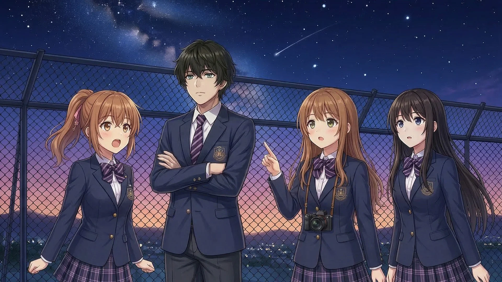
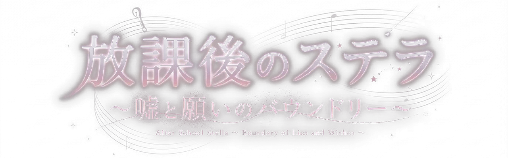
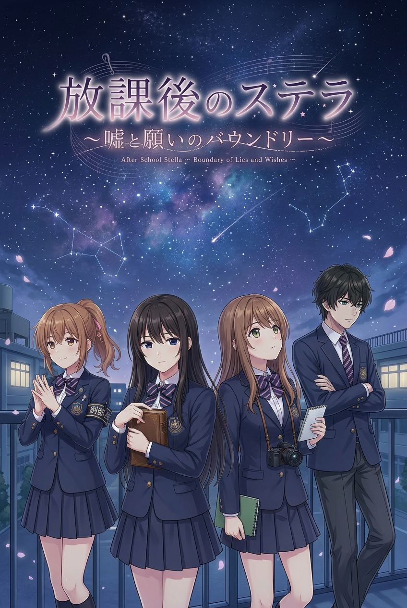
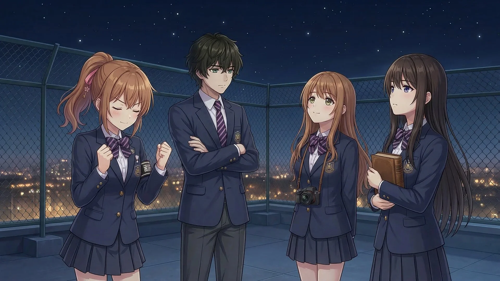
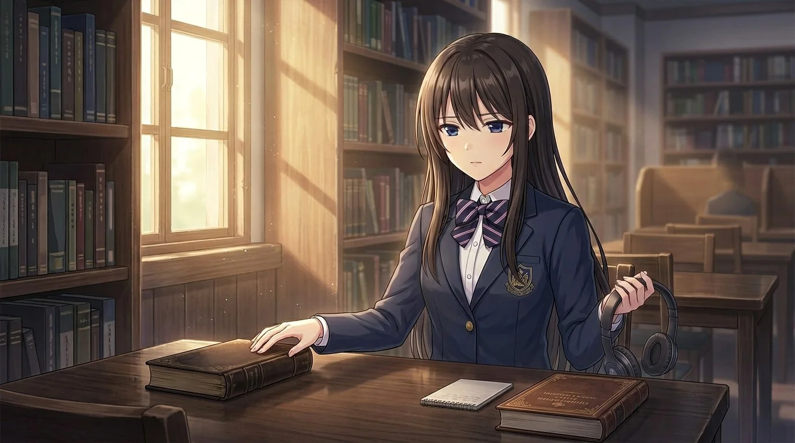
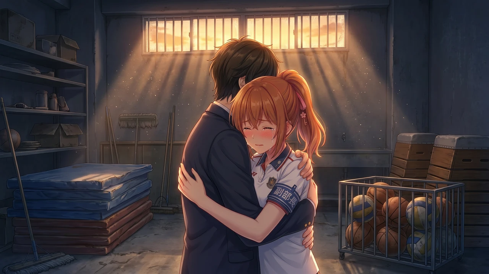
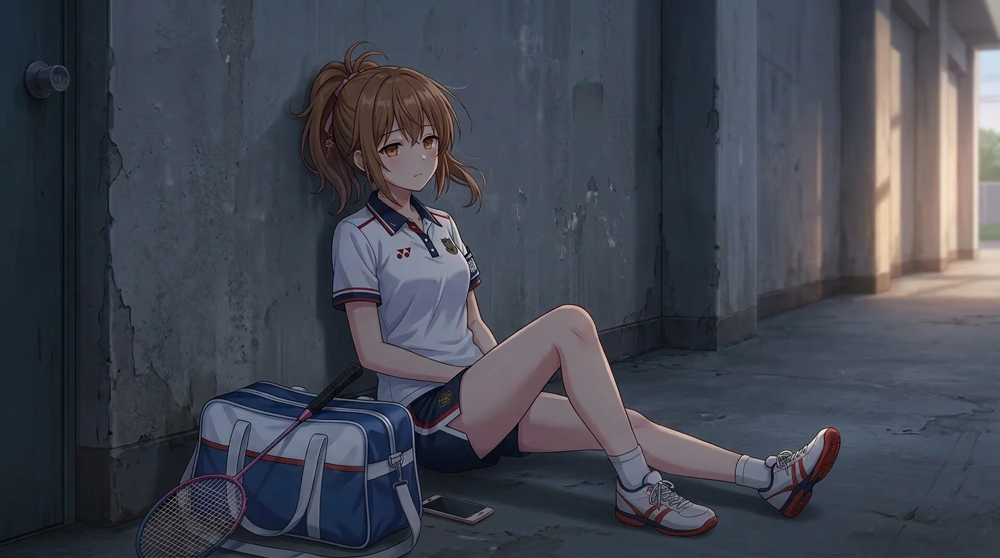
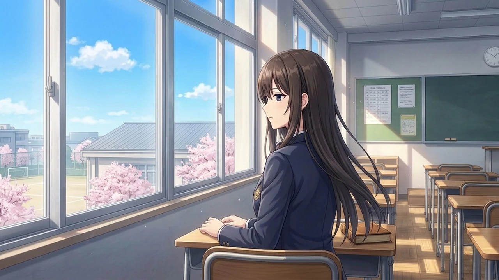
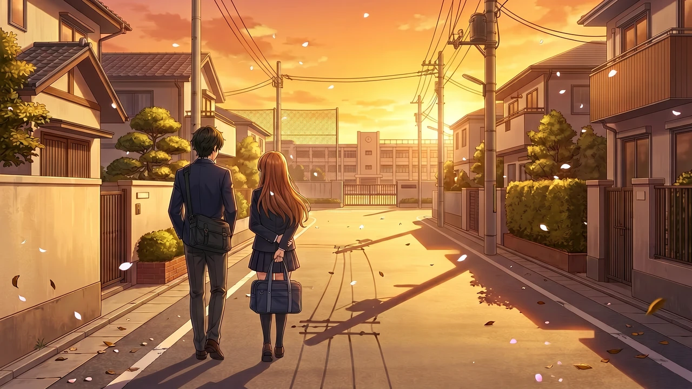
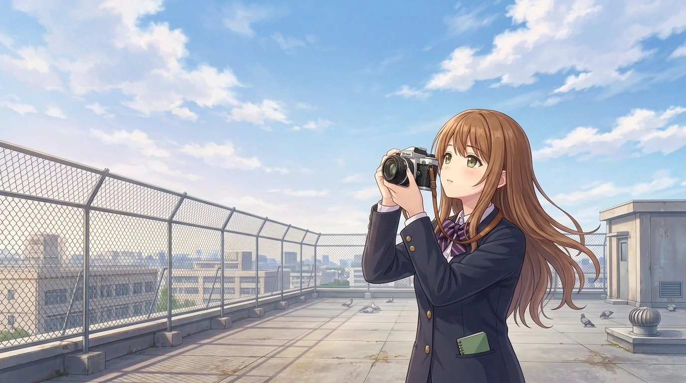

Story
言えなかったことが、星の下で輪郭を取り戻す。
主人公・桐島勇の放課後は、ほんの少しずつ色を失っていた。 けれど屋上で交わした約束、部室に残る沈黙、夜明けを待つ横顔が、 止まっていた時間をもう一度動かしていく。
共通ルートから選択で分岐し、桜咲さくら、神崎琴葉、月夜野まひるの物語へ。 それぞれの「嘘」と「願い」に触れた先で、プレイヤーは彼女たちとの境界線を越える。


放課後のステラ
Story
主人公・桐島勇の放課後は、ほんの少しずつ色を失っていた。 けれど屋上で交わした約束、部室に残る沈黙、夜明けを待つ横顔が、 止まっていた時間をもう一度動かしていく。
共通ルートから選択で分岐し、桜咲さくら、神崎琴葉、月夜野まひるの物語へ。 それぞれの「嘘」と「願い」に触れた先で、プレイヤーは彼女たちとの境界線を越える。

World
Characters
Badminton Club
いつも明るく、誰よりも先に笑ってみせる少女。 その笑顔は強さであり、誰にも見せられなかった弱さを隠す鎧でもある。
「新学期って、一回しかないんだからさ」
Quiet Melody
静かな時間を好み、言葉よりも沈黙に本音がにじむ少女。 近づくほどに、閉じていた音が少しずつほどけていく。
「水面って少し、音楽に似てるんです」
Dawn Notebook
カメラとノートを手放さない幼なじみ。 「今日、生きていて良かったこと」を書き続けながら、夜明けを待っている。
「ただ、覚えていたいだけ」
Gallery







Play
共通ルートの選択から、三人それぞれの個別ルートへ進行。
気になる選択の前で保存し、別の未来を確かめられる。
読後に印象的なスチルを振り返れるコレクション機能。
星空、放課後、沈黙の温度を音で支える演出。
System Requirements
Web公開版をそのままブラウザでプレイできます。PCでは広い画面、スマートフォンではホーム画面に追加してからの起動を推奨します。
Official X
#放課後のステラ の公式ポスト
制作のお知らせ、更新情報、放課後の余韻を届けるポストをここに表示します。 公式アカウントからハッシュタグ付きで投稿し、作品の空気を少しずつ広げていきます。
#放課後のステラ の新着投稿はXの検索ページで確認できます。